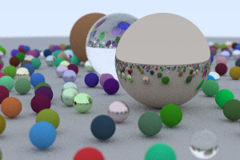
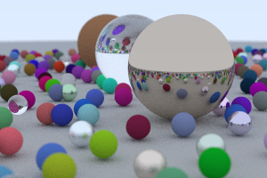
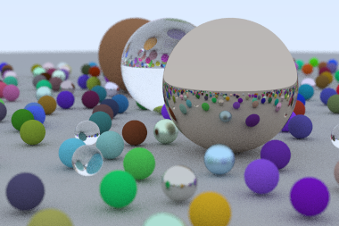

Ray Tracing In One Weekend
But can you do better?
Table of Contents
1. A Recap:
My basic ray tracer was pretty slow, even when I fed it 8 cores on my computer. So, I wanted to see if I could do better.
2. Random Number Generation
The first thing I did was look into the way that random numbers were being generated
to see if that was bottlenecking.
Launching my profiler, I couldn't find anything suspicious.
Either way, I changed my random_double function to test if it made a difference:
inline double random_double() { thread_local std::mt19937 generator(std::random_device{}()); std::uniform_real_distribution<double> distribution(0.0, 0.9999999999); return distribution(generator); }
I experimented with making the distribution a static variable as well, but it didn't yield any time savings.
This is worth more investigation, but since I am planning on moving this to the GPU anyways, I'll leave it.
3. Recursion Bad
Not always. But let's see what it does to the program.
In our case, I modified the ray_color function to use a for loop instead.
// give it a ray and an object and it'll tell you what to color it color ray_color(const ray &r, const hittable * world, int world_length, int depth) { ray temp_ray = r; // base is blue sky portion double blue_portion = 0.5 * (unit_vector(r.direction).y() + 1.0); color final = blue_portion * color(0.5, 0.7, 1.0) + (1 - blue_portion) * color(1, 1, 1); for (int i = 0; i < depth; ++i) { hit_record rec; if (hittable_list_hit(world, world_length, temp_ray, 0.0001, infinity, rec)) { color attenuation; if (scatter(rec.mat_ptr, temp_ray, rec, attenuation, temp_ray)) { final = attenuation * final; } else { return color(0, 0, 0); } } else { // hits nothing, return sky. return final; } } return color(0, 0, 0); }
The result is no marginal speed improvement.
4. OOP Bad
I came across this youtube video, which made the claim that "clean code" or SOLID, slows down your code. The main culprit in the video was polymorphism, and the example case they tested was a shapes abstraction. In their tests, using classes and overloaded functions was around 1.5 times slower than a non OOP approach.
In our case, we change the hittable class so that we don't need a derived sphere class. We do the same for material.
4.1. Result
What resulted is a performance improvement of around 1.6. In other words, for a render that takes 26 seconds, you can do it in around 16.
Recall this image? Rendered using the old code, this took around 26 seconds.

This is the image you can get with the same performance. Notice that there is a lot
less noise in the image.

Or, you can even render a bigger image:
